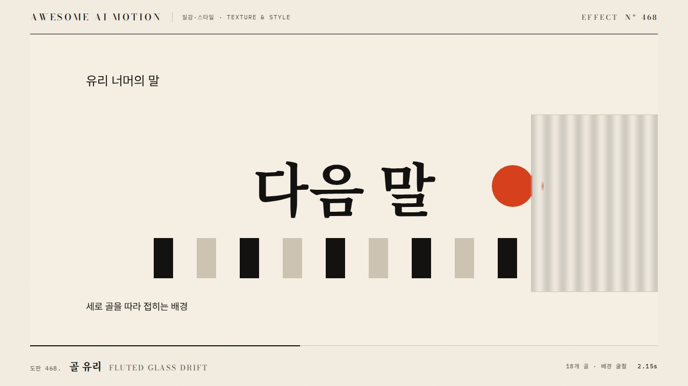

유리 굴절Glass Refraction
유리 패널 뒤 배경이 흐려지고 굴절되어 패널이 움직일 때 함께 일렁이는 효과A glass panel blurs and refracts the background behind it, rippling as the panel moves.
무엇을 전하나What it tells
- 카드나 패널이 배경 위에서 이동하며 유리처럼 보이게 할 때
- UI 패널의 계층을 재질로 구분하고 싶을 때
- When a card or panel moves over a background and should read as glass
- To separate UI layers through material instead of only color
- backdrop-filter 영역은 720px 이하 패널에만 쓴다(성능)
- 굴절 변위 12px 초과 금지
좋은 예와 나쁜 예Good and bad use
유리 패널이 1.5초 동안 오른쪽으로 이동하며 패널 안 배경이 6px 굴절되고 16px 흐려진 채 따라온다
blur를 40px 이상으로 올려 뒤가 뭉개지거나, 굴절이 커서 배경 그림이 깨져 보인다
파라미터Parameters
기본값은 클립에 쓴 값Defaults are the values used in the clip
| 항목PARAM | 기본DEFAULT | 범위RANGE | 메모NOTE |
|---|---|---|---|
| 이동 시간 | 1500ms | 1000~2200ms | 패널 이동 |
| blur | 16px | 10~24px | backdrop-filter |
| 굴절 변위 | 6px | 3~10px | feDisplacementMap scale |
| 패널 opacity | 0.12 | 0.08~0.2 | 흰색 채움 |
| 테두리 밝기 | 0.35 | 0.2~0.5 | 1px 상단 하이라이트 |
/* .glass{backdrop-filter:blur(16px) saturate(1.3);background:rgba(255,255,255,.12);border:1px solid rgba(255,255,255,.35);border-radius:28px} */
tl.to('.glass',{x:640,duration:1.5,ease:'power3.inOut'},t)
.to('#disp',{attr:{scale:6}},t) /* feDisplacementMap */
.to('#disp',{attr:{scale:0}},t+1.5);에이전트 프롬프트Agent prompts
그대로 붙여 넣는다Paste as is
<패널>을 유리 재질로 만들어 오른쪽으로 640px 이동시켜줘. backdrop-filter blur(16px) saturate(1.3), 흰색 배경 opacity 0.12, 1px 테두리 opacity 0.35, radius 28px. 이동은 1.5초 power3.inOut, 이동 중 feDisplacementMap scale을 0에서 6px까지 올렸다 0으로 되돌려. paused 타임라인 하나로 구동해.
Turn <panel> into glass and move it 640px right. Use backdrop-filter blur(16px) saturate(1.3), white fill at opacity 0.12, a 1px border at opacity 0.35, radius 28px. Move over 1.5s with power3.inOut, and ramp feDisplacementMap scale from 0 to 6px and back to 0 during the move. One paused timeline.
<파일>의 <패널>에 glass-refraction을 적용해. blur 16px, 굴절 변위 6px, 이동 1500ms power3.inOut, 패널 opacity 0.12. 0초, 0.75초, 1.5초, 1.7초를 캡처해 이동 중 굴절이 보이고 정지 후 0이 되는지, backdrop-filter가 실제 렌더에 반영되는지 확인해.
Apply glass-refraction to <panel> in <file>: blur 16px, refraction 6px, move 1500ms power3.inOut, panel opacity 0.12. Capture at 0s, 0.75s, 1.5s, and 1.7s to verify refraction is visible mid-move and returns to 0 at rest, and that backdrop-filter actually shows up in the render.
도구별로 쓰기In your tools
HyperFrames · ReelForge · Scrolline
잘 맞는 조합Pairs well with


출처Sources
개념 출처와 라이선스. 구현은 이 레포에서 새로 씀Concept sources and licenses. Implementations are original to this repo
- heygen-com/hyperframesApache-2.0
- heygen-com/hyperframesApache-2.0
- heygen-com/hyperframesApache-2.0
- local/HyperFrames-skills (
claude-skill:hyperframes-animation/adapters/html-in-canvas-patterns.md)unknown - DavidHDev/react-bitsMIT + Commons Clause v1.0